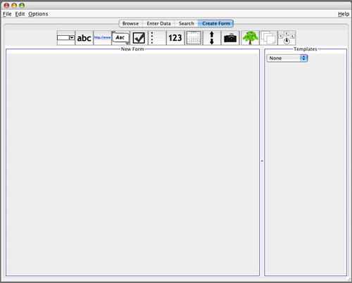
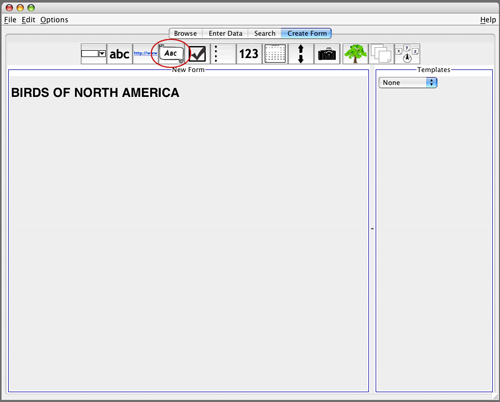
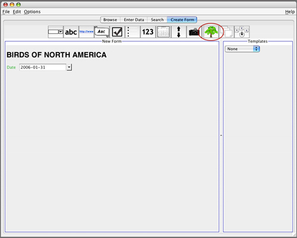
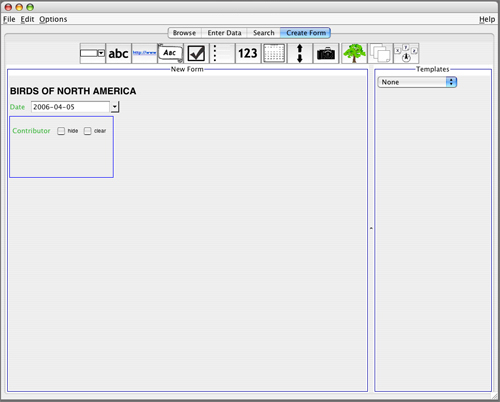
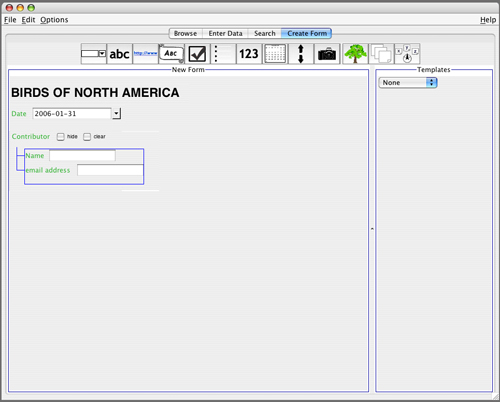
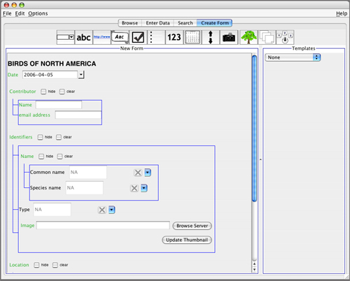
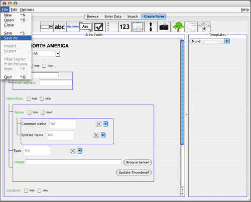
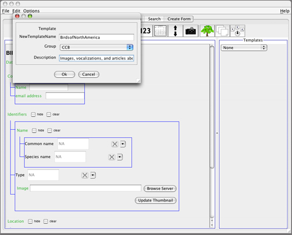
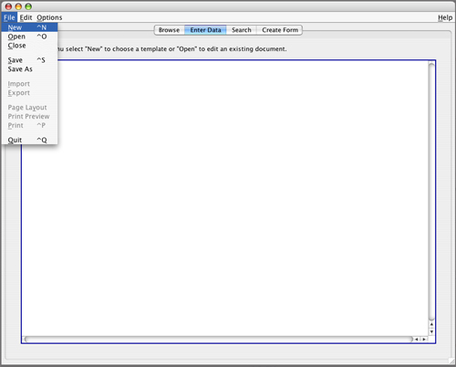
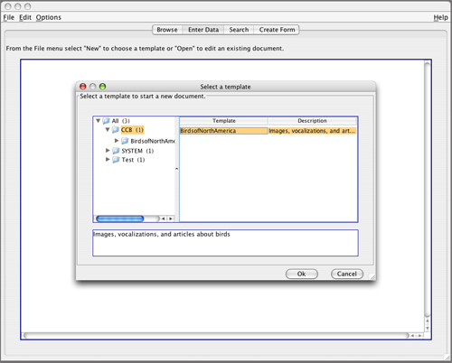

Starting out from Scratch
To create a completely new form for recording data, click on the Create Form tab. You may find it easiest to design a form on paper ahead of time, and then translate that form into a digital version using NeuroSys.
For this example, we will re-create the form used in our "Birds of North America" sample database.

Step One: Adding Widgets
To give the form a title, click on the Banner icon (circled in red) to add a banner widget. Double-click on the widget after it has been added to the form in order to change the title.

Note: Refer to the widget definitions under the "Creating Data Forms" section of the user manual for more specific explanations of all the individual widget types.
If you wish to remove a widget you have added to the form, right-clicking on it will give you the option to delete it.
In the next screen, you will see that we have also added a date widget, and are now ready to add a tree widget for contributor information.

When the tree widget first appears, it looks like an empty box. We need to drag other widgets inside it to create a hierarchy.

Here we have added two text fields and dragged them inside the "Contributor" tree.

Repeating the process of adding widgets and dragging them into the desired hierarchies leaves us with our final form:

Step Two: Saving the Form
Saving the form we have just created allows us to use it to record data. By saving it here, we are turning it into a Template.
Select "Save As" from the File menu, as shown below:

Give your new template a name and a description:

Step Three: Entering Data
Under the Enter Data tab, go to the File menu and select "New" to open the new template we just made.

Locate the template in the dialog box and select it. Note that the description appears in the box below the main window to help identify your templates. Click "Ok" to open it.

You can now enter data! Be sure to Save after doing so, and give the form a unique name in the Description field of the Save dialog box. What you enter in that field is what will show up as the form name in Browse mode. You will then be able to open the data-filled form in Browse mode.

| Previous page | Return to top of page | Next page |